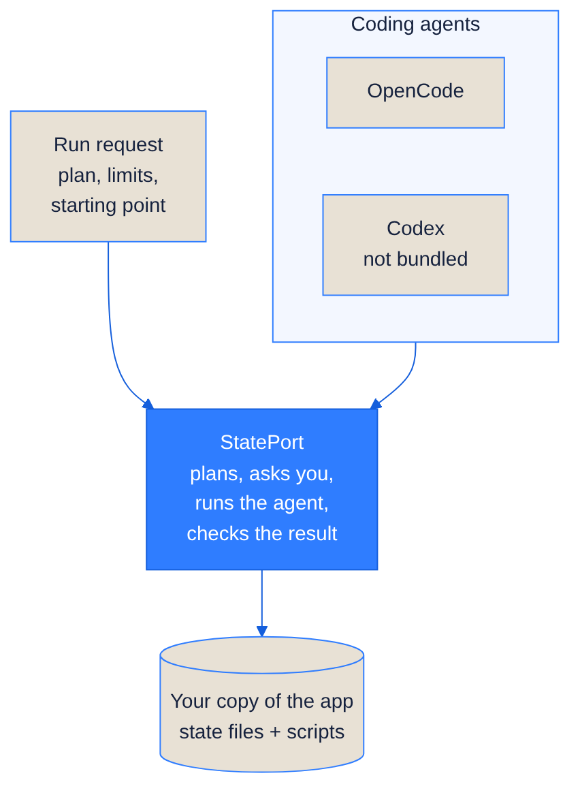

Design overview. Check the release status for current software availability.
On this page
The problem with chat alone
A chat is good for asking questions. It is a poor place to keep an app’s memory, permissions, decisions and history. Long threads get shortened. Sessions disappear. A transcript may hold several conflicting versions of the same fact.
StatePort moves the important information into readable files on your machine. The chat can still help, but it is no longer the only copy of your work.
What Stateware means
Stateware is the name for software built around saved, readable state. Its useful memory belongs to the app, not to one AI model or provider.
application
= reusable workflow
+ your saved state
+ clear permissions
+ change history
Where the AI tool fits
An AI tool can plan work, explain a choice and prepare a change. The plan is that StatePort decides what the tool may access, asks you before important actions and saves the result in the app. Today that full path is built for actions that follow a fixed script, such as the StudyState sample. Output from coding agents is recorded as a run result. StatePort does not turn it into saved app state.

What it aims to give you
These are goals. Current limitations lists what has been measured on Alpha.22 and Alpha.21.
- Open your current goals and progress without replaying a chat.
- Change AI tools without throwing away the app.
- Review a proposal before it changes saved work.
- See a clear message when a tool cannot do something safely.
The goal
StatePort aims to help you resume work faster, understand changes, and keep useful context when a tool or session changes.